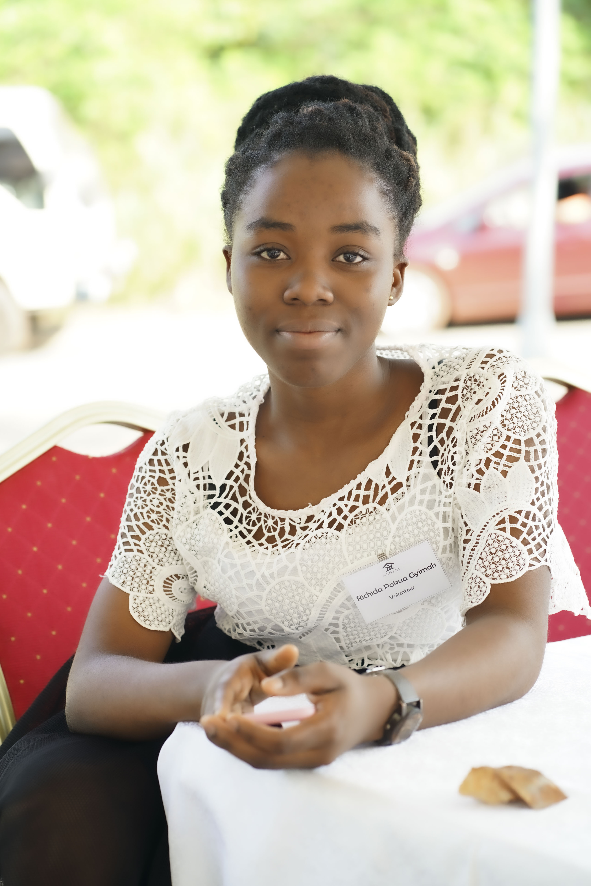

She takes interest in leadership and youth empowerment. She is currently volunteering for pythonGirl as the head of media and public relations to help erradicate computer illiteracy in Africa and also a planning committee member for the Techova Youth Summit that seeks to introduce the youth to opportunities in Science Technology Engineering and mathematics (STEAM). At Ashesi, she serves as the Academic Committee General Secretary. She works hand in hand with the Academic Committee chairperson and other committee members to make decisions based on Academics.
She also serves as a committee member to the Opportunities Committee. MasterCard Scholars are exposed to opportunities and encouraged to apply. In the last years,she has served on alot of Leadership positions and believes her presence and contribution can impact alot of peopleRichida Pokuaa Gyimah

Bio
Education
| Instituition | Date | Location |
| Ashesi University | September,2019 - June,2023 | Berekuso,Ghana |
| GIMPA | September,2018 - April,2019 | Accra,Ghana |
| Labone Senior High | September,2015 - May,2018 | Labone,Ghana |